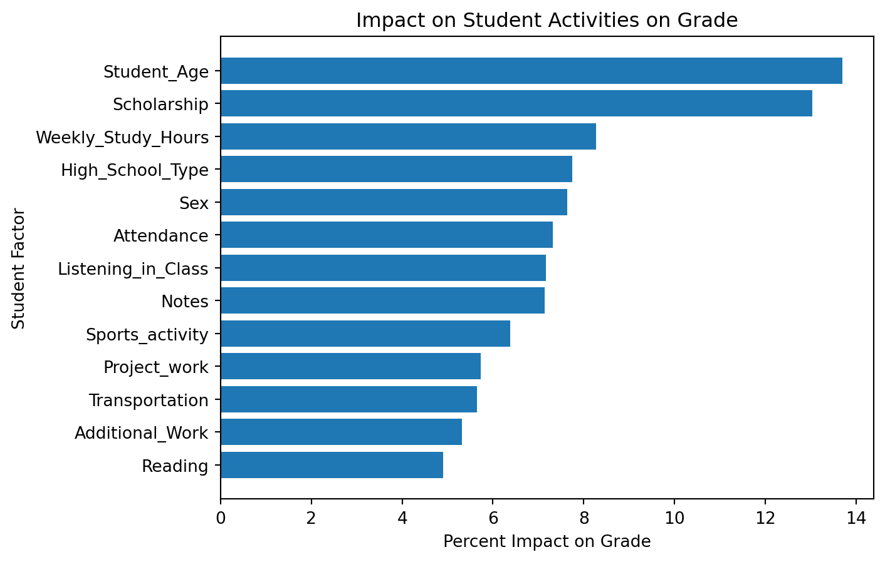

In college we are told that if we spend a lot of time studying, make sure to listen well in class, make sure to GO to class, and take good notes we will succeed. But does this advice hold up to scrutiny? We are about to find out. Using a dataset that has a wide range of metrics on undergraduate college students, I will use a random forest classifier to determine what features are most important to a student’s grade.
import matplotlib.pyplot as pltimport numpy as npimport pandas as pdimport seaborn as snsfrom sklearn.preprocessing import LabelEncoderfrom sklearn.compose import make_column_selectorfrom sklearn.ensemble import RandomForestClassifierfrom sklearn.metrics import accuracy_scorefrom sklearn.model_selection import train_test_split# get datastudent_df = pd.read_csv('https://raw.githubusercontent.com/erica16/ml1_blogs/main/data/student.csv')print(student_df.head())
Unnamed: 0 Id Student_Age Sex High_School_Type Scholarship \
0 0 5001 21 Male Other 50%
1 1 5002 20 Male Other 50%
2 2 5003 21 Male State 50%
3 3 5004 18 Female Private 50%
4 4 5005 22 Male Private 50%
Additional_Work Sports_activity Transportation Weekly_Study_Hours \
0 Yes No Private 0
1 Yes No Private 0
2 No No Private 2
3 Yes No Bus 2
4 No No Bus 12
Attendance Reading Notes Listening_in_Class Project_work Grade
0 Always Yes Yes No No AA
1 Always Yes No Yes Yes AA
2 Never No No No Yes AA
3 Always No Yes No No AA
4 Always Yes No Yes Yes AA
Step 2: Clean data
Since a lot of this data is categorical, we will need to use an encoder to make it numerical so the random forest classifier can handle it. For this task I am using a label encoder because the majority of the categorical data is not ordered and has a small set of repeated values.
Code
#dropping ID because it will not be used to train or be predictedstudent_df_clean = student_df.drop(student_df.columns[:2], axis='columns')cat_selector = make_column_selector(dtype_include=object)cat_columns = cat_selector(student_df_clean)# use encoder for categorical datastudent_df_enc = student_df_clean.select_dtypes(include=['number'])label_encoder = LabelEncoder()# Iterate through columns and encode categorical columnsfor col in student_df_clean.columns:if student_df_clean[col].dtype =='object': # Check if column has categorical data student_df_enc[col] = label_encoder.fit_transform(student_df_clean[col])print(student_df_enc.head())
Now that the data is clean we can split it up into training and testing data using the scikit learn train_test_split function. Since we want to know what factors impact grade, the independent variables (X) will be all the factors besides grade, and the dependent variable (y) will be grade.
Code
train_set_X, test_set_X, train_set_y, test_set_y = train_test_split(student_df_enc.drop('Grade', axis='columns'), student_df_enc['Grade'], test_size=0.2, random_state=42)rnd_clf = RandomForestClassifier(n_estimators=500, max_leaf_nodes=16, n_jobs=-1, random_state=42)rnd_clf.fit(train_set_X, train_set_y)y_pred_rf = rnd_clf.predict(test_set_X)# take a look at feature importances to see what to use as the independent valuefeature_importances = pd.Series(rnd_clf.feature_importances_, train_set_X.columns).sort_values()plt.barh(feature_importances.index, feature_importances.values *100)plt.xlabel('Percent Impact on Grade')plt.ylabel('Student Factor')plt.title('Impact on Student Activities on Grade')plt.show()print(f"Accuracy score: {accuracy_score(test_set_y, y_pred_rf) *100}%")

Accuracy score: 20.689655172413794%
Investigate results
Upon viewing the top factors that impact a student’s grade, I am compelled to remind the reader that correlation does not mean causation. Surely there are other forces at play that make a student’s age the number one most impactful factor on their grade, and whether they do or don’t have a scholarship also probably isn’t the cause of good grades. It is also important to keep an eye on the scale of this chart - the highest factor is only about 14% impactful, and the highest factor that a student can actually control is about 9% impactful. It doesn’t look like any one thing will have a huge impact on grades, which makes sense. If a student starts going to class more, for example, but doesn’t pay attention or take notes, that most likely won’t cause a major impact in their grade (unless their grade is 100% attendance based, but that is also unlikely). The other thing to point out is the accuracy score - this random forest classifier is only 20% accurate. That means there is a lot of room for improvement! Perhaps more data, or better quality data, or more tweaking the label encoder could increase this number.